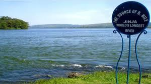

Welcome to Jinja
Jinja District is known as the adventure capital of East Africa and the home of the Source of the Nile.

Why Visit Jinja?
- Adventure tourism
- Beautiful scenery
- Rich culture and history
Jinja District is known as the adventure capital of East Africa and the home of the Source of the Nile.
